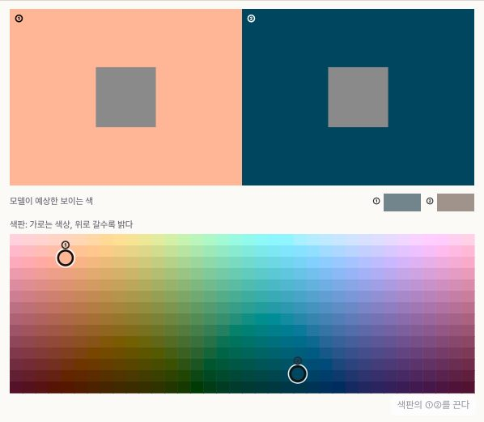
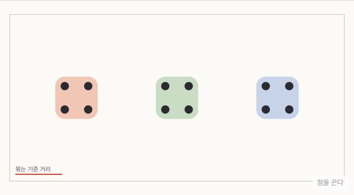
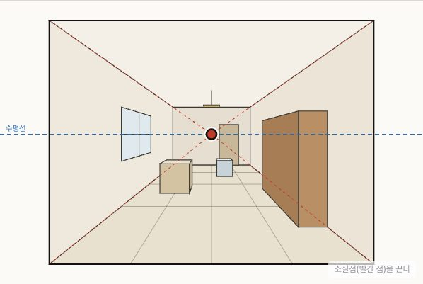
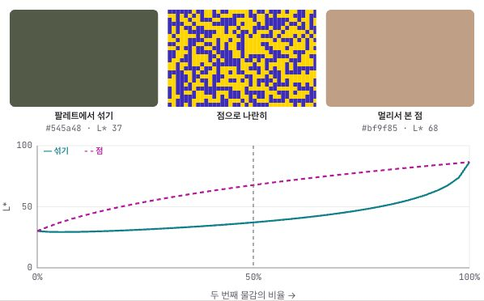
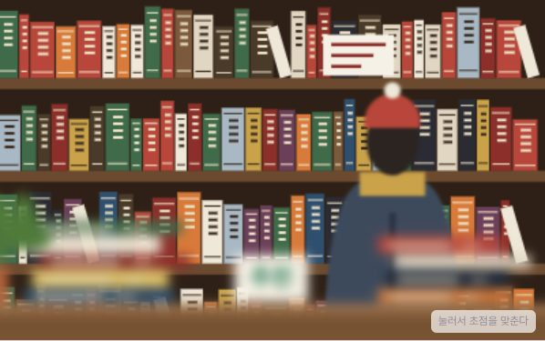
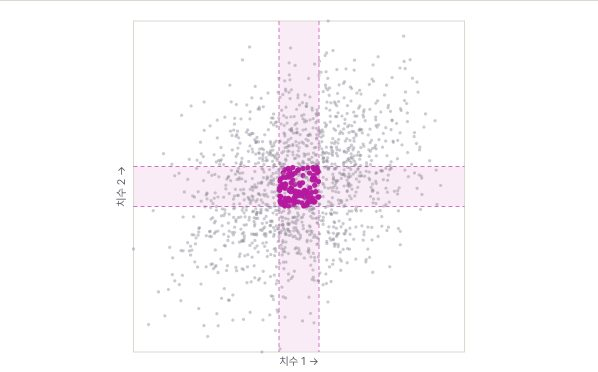

처음이라면
색과 형태를 보는 눈에서 손으로 그리기까지
색을 섞고, 소실점을 끌고, 같은 그림을 흑백과 전/후로 나란히 놓아 봅니다. 장마다 종이와 연필, 물감으로 해 볼 과제가 있는 미술·시각 디자인 한국어 교과서 서가입니다.
조건에 맞는 책이 없습니다. 다른 검색어나 분야를 선택해 보세요.
질문 하나를 골라 그림을 움직여 보세요. 각 실험은 해당 교과서의 그 장면으로 바로 이어집니다.

ColorBook · 색채같은 회색인데 왜 다르게 보일까?배경색을 바꾸며 한 색이 두 색처럼 보이는 순간을 찾아봅니다.한 색을 두 색으로 →
CompositionBook · 형태와 구도점 몇 개를 옮기면 무리가 생길까?간격만 바꿔도 눈이 점들을 다르게 묶는 모습을 봅니다.가까움: 점을 끌어 무리 만들기 →
DrawingBook · 드로잉소실점은 그림 속 어디에 있어야 할까?소실점을 끌어 보면 그림을 보는 사람이 선 자리가 함께 바뀝니다.소실점과 내가 선 자리 →
ArtHistoryBook · 미술사쇠라는 왜 물감을 섞지 않고 점을 찍었을까?팔레트에서 섞은 색과 점으로 나란히 찍은 색의 밝기를 견줍니다.섞기와 점 찍기 →
ImageBook · 사진과 이미지조리개를 열면 배경이 왜 흐려질까?f값을 바꾸고 초점을 옮기며 앞뒤가 녹는 정도를 봅니다.조리개와 심도 →
IndustrialBook · 산업디자인모든 치수에서 평균인 사람은 있을까?겹치는 치수가 늘수록 "평균인 사람"이 얼마나 드물어지는지 셉니다.평균인 사람 찾기 →